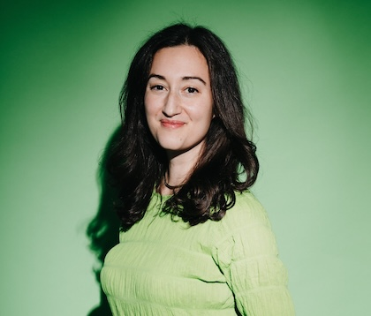

Stories
- The Guest’s Eye - Confluence (forthcoming)
- Expatinn (The Expat), translated by Jón Ferdínand Estherarson - Tímarit Máls og Menningar
- Laundry Day - Iceland in Other Words zine
Essays
- Duglegur - On the Seawall (forthcoming)
- Congratulations on Your Baby - Ós Pressan (forthcoming)
- The Breakfast Buffet - The Rappahannock Review
- Finding Warmth and Welcome as an Immigrant in Iceland - Catapult
- The Conversationalist - Hinterland Magazine
- The Rowan Tree - Ós Pressan
About

Michelle Spinei’s work has appeared in Catapult, Hinterland Magazine, Ós Pressan, and more. She is a member of Reykjavík Poetics and has been awarded a residency at Gullkistan. She lives in Iceland with her family.